9 SS9 Results
| Pos | Car | Code | Time (s) | Gap | Diff |
|---|---|---|---|---|---|
| 1 | 33 | EVA | 552.8 | 0.0 | 0.0 |
| 2 | 69 | ROV | 553.5 | 0.7 | 0.7 |
| 3 | 1 | OGI | 556.7 | 3.9 | 3.2 |
| 4 | 11 | NEU | 557.8 | 5.0 | 1.1 |
| 5 | 42 | BRE | 558.9 | 6.1 | 1.1 |
| 6 | 18 | KAT | 559.1 | 6.3 | 0.2 |
| 7 | 19 | LOE | 560.1 | 7.3 | 1.0 |
| 8 | 44 | GRE | 560.4 | 7.6 | 0.3 |
| 9 | 2 | SOL | 568.7 | 15.9 | 8.3 |
| 10 | 8 | TÄN | 629.6 | 76.8 | 60.9 |
9.1 Stage SS9 Splits Analysis
Reports on splits
9.1.1 Split Locations
Length of each split section in km:
| full_split_distances | stage_dist | |
|---|---|---|
| split_1 | 4.10 | 4.10 |
| split_2 | 7.39 | 11.49 |
| split_3 | 3.01 | 14.50 |
| split_N | 2.30 | 16.80 |
9.1.2 Stage Split Times & Result
Summary of stage split times and overall stage result:
| code | split_1 | split_2 | split_3 | split_N | diffFirstS | position |
|---|---|---|---|---|---|---|
| EVA | 144.0 | 375.0 | 470.2 | 552.8 | 0.0 | 1 |
| ROV | 142.4 | 372.7 | 469.7 | 553.5 | 0.7 | 2 |
| OGI | 144.8 | 378.3 | 474.2 | 556.7 | 3.9 | 3 |
| NEU | 145.6 | 377.2 | 474.2 | 557.8 | 5.0 | 4 |
| BRE | 144.2 | 375.9 | 473.6 | 558.9 | 6.1 | 5 |
| KAT | 145.2 | 377.3 | 474.9 | 559.1 | 6.3 | 6 |
| LOE | 145.2 | 379.2 | 476.1 | 560.1 | 7.3 | 7 |
| GRE | 145.0 | 379.6 | 477.1 | 560.4 | 7.6 | 8 |
| SOL | 148.0 | 382.2 | 481.2 | 568.7 | 15.9 | 9 |
| TÄN | 145.1 | 405.5 | 527.6 | 629.6 | 76.8 | 10 |
9.1.3 Split Time Rankings
Rank of each split time:
| code | split_1 | split_2 | split_3 | split_N |
|---|---|---|---|---|
| EVA | 2 | 2 | 2 | 1 |
| ROV | 1 | 1 | 1 | 2 |
| OGI | 4 | 6 | 4 | 3 |
| NEU | 8 | 4 | 4 | 4 |
| BRE | 3 | 3 | 3 | 5 |
| KAT | 7 | 5 | 5 | 6 |
| LOE | 7 | 7 | 6 | 7 |
| GRE | 5 | 8 | 7 | 8 |
| SOL | 9 | 9 | 8 | 9 |
| TÄN | 6 | 10 | 9 | 10 |
Rank on each split section:
| code | split_1 | split_2 | split_3 | split_N |
|---|---|---|---|---|
| EVA | 2 | 2 | 1 | 2 |
| ROV | 1 | 1 | 4 | 5 |
| OGI | 4 | 6 | 2 | 1 |
| NEU | 8 | 3 | 4 | 4 |
| BRE | 3 | 4 | 7 | 8 |
| KAT | 7 | 5 | 6 | 7 |
| LOE | 7 | 7 | 3 | 6 |
| GRE | 5 | 9 | 5 | 3 |
| SOL | 9 | 8 | 8 | 9 |
| TÄN | 6 | 10 | 9 | 10 |
9.1.4 Split Section Pace
Pace is measured in seconds per kilometer, which is to say, how long it takes to complete each kilometer (lower is better):
| code | split_1 | split_2 | split_3 | split_N |
|---|---|---|---|---|
| EVA | 35.12 | 31.26 | 31.63 | 35.91 |
| ROV | 34.73 | 31.16 | 32.23 | 36.43 |
| OGI | 35.32 | 31.60 | 31.86 | 35.87 |
| NEU | 35.51 | 31.34 | 32.23 | 36.35 |
| BRE | 35.17 | 31.35 | 32.46 | 37.09 |
| KAT | 35.41 | 31.41 | 32.43 | 36.61 |
| LOE | 35.41 | 31.66 | 32.19 | 36.52 |
| GRE | 35.37 | 31.75 | 32.39 | 36.22 |
| SOL | 36.10 | 31.69 | 32.89 | 38.04 |
| TÄN | 35.39 | 35.24 | 40.56 | 44.35 |
9.1.5 Pace Chart
Pace relative to the stage winner.
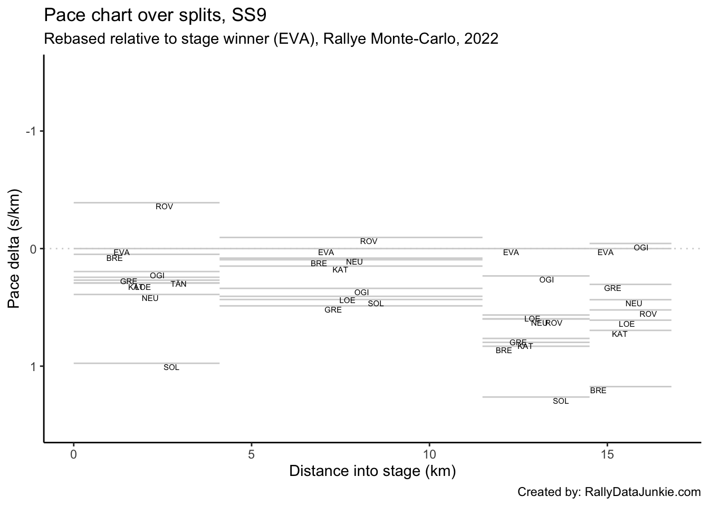
9.1.6 Ultimate Stage Comparisons
Split time comparisons relative to various ultimate stage time calculations.
These views provide various ways of comparing the performance of each driver to various ghost drivers:
- best recorded split time at each split (ultimate actuals): gives an estimate of how well the driver’s split times compare with each first ranked split time (time into stage at each split);
- fastest time going from one split to the next (ultimate sections): gives an estimate of how quickly each driver completed each split section relative to the quickest time recorded completing that split section (time taken to go from one split point to the next);
- accumulated ultimate sections times: gives and estimate of how quickly the driver is going relative to the fastest possible completion of the stage based on accumulated ultimate split section times.
9.1.6.1 Ultimate Actuals
Driver times compared to the first ranked recorded split time at each split:
| code | split_1 | split_2 | split_3 | split_N |
|---|---|---|---|---|
| EVA | 1.6 | 2.3 | 0.5 | 0.0 |
| ROV | 0.0 | 0.0 | 0.0 | 0.7 |
| OGI | 2.4 | 5.6 | 4.5 | 3.9 |
| NEU | 3.2 | 4.5 | 4.5 | 5.0 |
| BRE | 1.8 | 3.2 | 3.9 | 6.1 |
| KAT | 2.8 | 4.6 | 5.2 | 6.3 |
| LOE | 2.8 | 6.5 | 6.4 | 7.3 |
| GRE | 2.6 | 6.9 | 7.4 | 7.6 |
| SOL | 5.6 | 9.5 | 11.5 | 15.9 |
| TÄN | 2.7 | 32.8 | 57.9 | 76.8 |
| ultimate | 0.0 | 0.0 | 0.0 | 0.0 |
9.1.6.2 Ultimate Sections
Split durations rebased relative to the fastest transit of each split section:
| code | split_1 | split_2 | split_3 | split_N |
|---|---|---|---|---|
| EVA | 1.6 | 0.7 | 0.0 | 0.1 |
| ROV | 0.0 | 0.0 | 1.8 | 1.3 |
| OGI | 2.4 | 3.2 | 0.7 | 0.0 |
| NEU | 3.2 | 1.3 | 1.8 | 1.1 |
| BRE | 1.8 | 1.4 | 2.5 | 2.8 |
| KAT | 2.8 | 1.8 | 2.4 | 1.7 |
| LOE | 2.8 | 3.7 | 1.7 | 1.5 |
| GRE | 2.6 | 4.3 | 2.3 | 0.8 |
| SOL | 5.6 | 3.9 | 3.8 | 5.0 |
| TÄN | 2.7 | 30.1 | 26.9 | 19.5 |
| ultimate | 0.0 | 0.0 | 0.0 | 0.0 |
9.1.6.3 Ultimate Accumulated Sections
Actual split times relative to the accumulated ultimate split section times:
| code | split_1 | split_2 | split_3 | split_N |
|---|---|---|---|---|
| EVA | 1.6 | 2.3 | 2.3 | 2.4 |
| ROV | 0.0 | 0.0 | 1.8 | 3.1 |
| OGI | 2.4 | 5.6 | 6.3 | 6.3 |
| NEU | 3.2 | 4.5 | 6.3 | 7.4 |
| BRE | 1.8 | 3.2 | 5.7 | 8.5 |
| KAT | 2.8 | 4.6 | 7.0 | 8.7 |
| LOE | 2.8 | 6.5 | 8.2 | 9.7 |
| GRE | 2.6 | 6.9 | 9.2 | 10.0 |
| SOL | 5.6 | 9.5 | 13.3 | 18.3 |
| TÄN | 2.7 | 32.8 | 59.7 | 79.2 |
| ultimate | 0.0 | 0.0 | 0.0 | 0.0 |
9.1.7 Split Section Pace Distribution
Distribution of pace values for each split section:
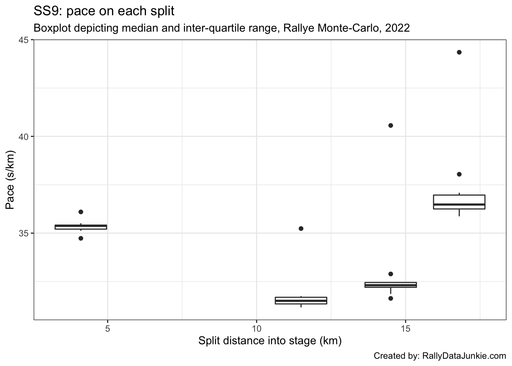
9.2 Text report
| code | identifier | entryId | stage | overall_pos | prev_position | retained_lead | lost_lead | gained_lead | overall_position_delta | overall_chase_code | overall_lead_code | overall_gap | overall_diff | overall_chase | overall_stage_pos | stage_position | stage_win | position | TimeInS | gap | diff | chase | chase_code | lead_code |
|---|---|---|---|---|---|---|---|---|---|---|---|---|---|---|---|---|---|---|---|---|---|---|---|---|
| EVA | 33 | 24376 | SS9 | 3 | 3 | FALSE | FALSE | FALSE | 0 | NEU | OGI | 14.7 | 8.2 | 30.8 | 1 | 1 | TRUE | 1 | 552.8 | 0.0 | 0.0 | 0.7 | ROV | NA |
| ROV | 69 | 24378 | SS9 | 9 | 9 | FALSE | FALSE | FALSE | 0 | SOL | TÄN | 126.2 | 0.0 | 25.3 | 2 | 2 | FALSE | 2 | 553.5 | 0.7 | 0.7 | 3.2 | OGI | EVA |
| OGI | 1 | 24375 | SS9 | 2 | 2 | FALSE | FALSE | FALSE | 0 | EVA | LOE | 6.5 | 6.5 | 8.2 | 3 | 3 | FALSE | 3 | 556.7 | 3.9 | 3.2 | 1.1 | NEU | ROV |
| NEU | 11 | 24377 | SS9 | 4 | 4 | FALSE | FALSE | FALSE | 0 | BRE | EVA | 45.5 | 30.8 | 12.5 | 4 | 4 | FALSE | 4 | 557.8 | 5.0 | 1.1 | 1.1 | BRE | OGI |
| BRE | 42 | 24381 | SS9 | 5 | 6 | FALSE | FALSE | FALSE | 1 | GRE | NEU | 58.0 | 12.5 | 10.7 | 5 | 5 | FALSE | 5 | 558.9 | 6.1 | 1.1 | 0.2 | KAT | NEU |
| KAT | 18 | 24380 | SS9 | 7 | 8 | FALSE | FALSE | FALSE | 1 | TÄN | GRE | 94.9 | 26.2 | 31.3 | 6 | 6 | FALSE | 6 | 559.1 | 6.3 | 0.2 | 1.0 | LOE | BRE |
| LOE | 19 | 24385 | SS9 | 1 | 1 | TRUE | FALSE | FALSE | 0 | OGI | NA | 0.0 | NA | 6.5 | 7 | 7 | FALSE | 7 | 560.1 | 7.3 | 1.0 | 0.3 | GRE | KAT |
| GRE | 44 | 24382 | SS9 | 6 | 7 | FALSE | FALSE | FALSE | 1 | KAT | BRE | 68.7 | 10.7 | 26.2 | 8 | 8 | FALSE | 8 | 560.4 | 7.6 | 0.3 | 8.3 | SOL | LOE |
| SOL | 2 | 24384 | SS9 | 10 | 10 | FALSE | FALSE | FALSE | 0 | NA | ROV | 151.5 | 25.3 | NA | 9 | 9 | FALSE | 9 | 568.7 | 15.9 | 8.3 | 60.9 | TÄN | GRE |
| TÄN | 8 | 24379 | SS9 | 8 | 5 | FALSE | FALSE | FALSE | -3 | ROV | KAT | 126.2 | 31.3 | 0.0 | 10 | 10 | FALSE | 10 | 629.6 | 76.8 | 60.9 | NA | NA | SOL |
Stage report for SS9:
EVA took the stage win and marking a time of 552.8s.
ROV was in second place on stage, with a time of 553.5s , only 0.7s behind EVA.
OGI was in third place on stage, 3.9s behind the stage winner in a time of 556.7s .
NEU was in fourth place on stage, 1.1s behind OGI .
BRE took fifth position on stage, 1.1s behind NEU and moved up one place to fifth overall.
KAT was in sixth on stage, with a time of 559.1s and moved up one place to seventh overall and just 0.2s further back behind BRE.
LOE was in seventh on stage, 7.3s behind the stage winner in a time of 560.1s and retained the overall lead.
GRE was in eighth place on stage, 7.6s behind stage winner EVA and moved up one place to sixth overall, just 0.3s off LOE.
SOL was in ninth on stage, with a time of 568.7s .
TÄN was in tenth place on stage dropped three places to eighth overall, with a time of 629.6s, well back on SOL, who was 60.9s quicker.
9.3 Driver Report, SS9 - OGI
OGI was in third place on stage, 3.9s behind the stage winner in a time of 556.7s .
Stage report for OGI.
| Pos | Car | Code | Time (s) | Gap | Diff |
|---|---|---|---|---|---|
| 1 | 33 | EVA | -3.9 | -3.9 | 0.0 |
| 2 | 69 | ROV | -3.2 | -3.2 | 0.7 |
| 3 | 1 | OGI | 0.0 | 0.0 | 3.2 |
| 4 | 11 | NEU | 1.1 | 1.1 | 1.1 |
| 5 | 42 | BRE | 2.2 | 2.2 | 1.1 |
| 6 | 18 | KAT | 2.4 | 2.4 | 0.2 |
| 7 | 19 | LOE | 3.4 | 3.4 | 1.0 |
| 8 | 44 | GRE | 3.7 | 3.7 | 0.3 |
| 9 | 2 | SOL | 12.0 | 12.0 | 8.3 |
| 10 | 8 | TÄN | 72.9 | 72.9 | 60.9 |
9.3.1 Rebased Split Times
OGI’s delta at each split compared to other drivers.
| code | split_1 | split_2 | split_3 | split_N |
|---|---|---|---|---|
| EVA | -0.8 | -3.3 | -4.0 | -3.9 |
| ROV | -2.4 | -5.6 | -4.5 | -3.2 |
| OGI | 0.0 | 0.0 | 0.0 | 0.0 |
| NEU | 0.8 | -1.1 | 0.0 | 1.1 |
| BRE | -0.6 | -2.4 | -0.6 | 2.2 |
| KAT | 0.4 | -1.0 | 0.7 | 2.4 |
| LOE | 0.4 | 0.9 | 1.9 | 3.4 |
| GRE | 0.2 | 1.3 | 2.9 | 3.7 |
| SOL | 3.2 | 3.9 | 7.0 | 12.0 |
| TÄN | 0.3 | 27.2 | 53.4 | 72.9 |
9.3.2 Off-the-Pace Chart
Accumulated stage time deltas at each split:
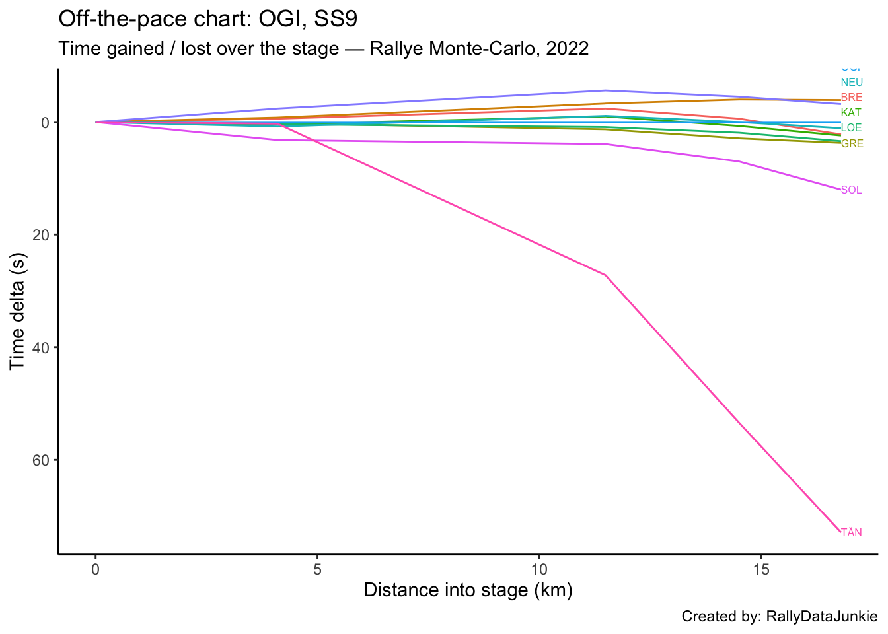
9.3.3 Within-Split Duration Deltas
OGI’s delta in time to complete each split section compared to other drivers:
| code | split_1 | split_2 | split_3 | split_N |
|---|---|---|---|---|
| EVA | -0.8 | -2.5 | -0.7 | 0.1 |
| ROV | -2.4 | -3.2 | 1.1 | 1.3 |
| OGI | 0.0 | 0.0 | 0.0 | 0.0 |
| NEU | 0.8 | -1.9 | 1.1 | 1.1 |
| BRE | -0.6 | -1.8 | 1.8 | 2.8 |
| KAT | 0.4 | -1.4 | 1.7 | 1.7 |
| LOE | 0.4 | 0.5 | 1.0 | 1.5 |
| GRE | 0.2 | 1.1 | 1.6 | 0.8 |
| SOL | 3.2 | 0.7 | 3.1 | 5.0 |
| TÄN | 0.3 | 26.9 | 26.2 | 19.5 |
9.3.4 Within-Split Pace Deltas
| code | split_1 | split_2 | split_3 | split_N |
|---|---|---|---|---|
| EVA | -0.20 | -0.34 | -0.23 | 0.04 |
| ROV | -0.59 | -0.43 | 0.37 | 0.57 |
| OGI | 0.00 | 0.00 | 0.00 | 0.00 |
| NEU | 0.20 | -0.26 | 0.37 | 0.48 |
| BRE | -0.15 | -0.24 | 0.60 | 1.22 |
| KAT | 0.10 | -0.19 | 0.56 | 0.74 |
| LOE | 0.10 | 0.07 | 0.33 | 0.65 |
| GRE | 0.05 | 0.15 | 0.53 | 0.35 |
| SOL | 0.78 | 0.09 | 1.03 | 2.17 |
| TÄN | 0.07 | 3.64 | 8.70 | 8.48 |
9.3.5 Within-Split Pace Map
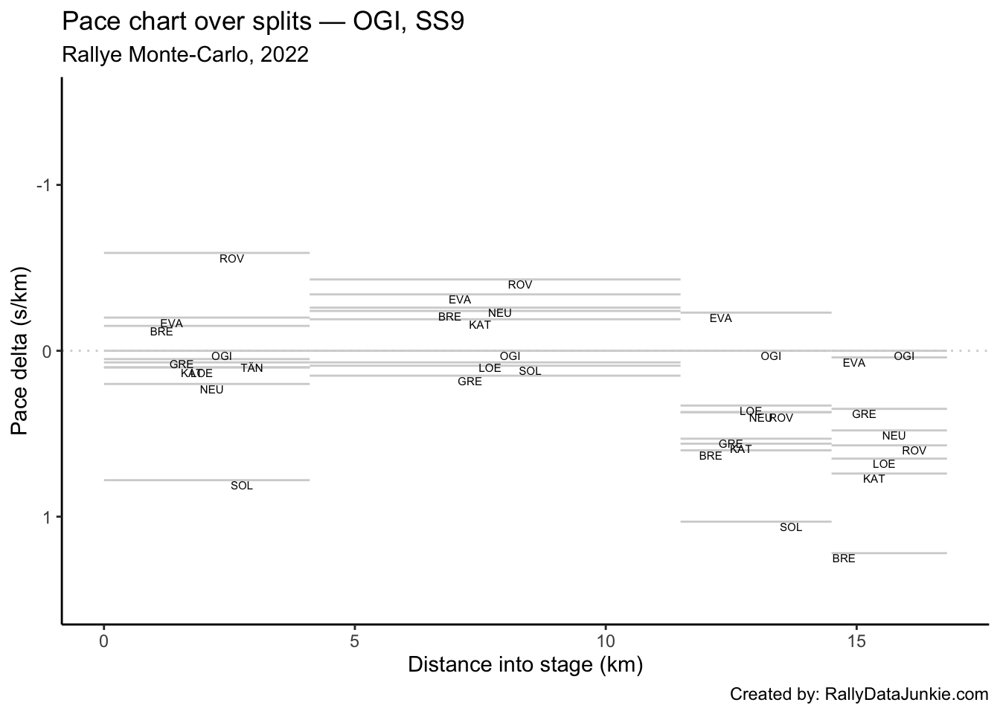
9.4 Driver Report, SS9 - EVA
EVA took the stage win and marking a time of 552.8s.
Stage report for EVA.
| Pos | Car | Code | Time (s) | Gap | Diff |
|---|---|---|---|---|---|
| 1 | 33 | EVA | 0.0 | 0.0 | 0.0 |
| 2 | 69 | ROV | 0.7 | 0.7 | 0.7 |
| 3 | 1 | OGI | 3.9 | 3.9 | 3.2 |
| 4 | 11 | NEU | 5.0 | 5.0 | 1.1 |
| 5 | 42 | BRE | 6.1 | 6.1 | 1.1 |
| 6 | 18 | KAT | 6.3 | 6.3 | 0.2 |
| 7 | 19 | LOE | 7.3 | 7.3 | 1.0 |
| 8 | 44 | GRE | 7.6 | 7.6 | 0.3 |
| 9 | 2 | SOL | 15.9 | 15.9 | 8.3 |
| 10 | 8 | TÄN | 76.8 | 76.8 | 60.9 |
9.4.1 Rebased Split Times
EVA’s delta at each split compared to other drivers.
| code | split_1 | split_2 | split_3 | split_N |
|---|---|---|---|---|
| EVA | 0.0 | 0.0 | 0.0 | 0.0 |
| ROV | -1.6 | -2.3 | -0.5 | 0.7 |
| OGI | 0.8 | 3.3 | 4.0 | 3.9 |
| NEU | 1.6 | 2.2 | 4.0 | 5.0 |
| BRE | 0.2 | 0.9 | 3.4 | 6.1 |
| KAT | 1.2 | 2.3 | 4.7 | 6.3 |
| LOE | 1.2 | 4.2 | 5.9 | 7.3 |
| GRE | 1.0 | 4.6 | 6.9 | 7.6 |
| SOL | 4.0 | 7.2 | 11.0 | 15.9 |
| TÄN | 1.1 | 30.5 | 57.4 | 76.8 |
9.4.2 Off-the-Pace Chart
Accumulated stage time deltas at each split:
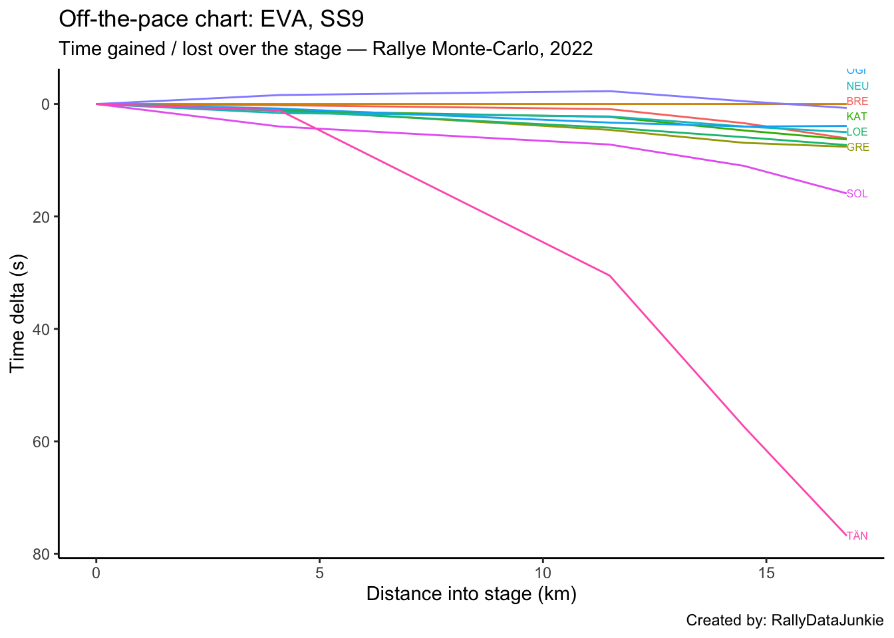
9.4.3 Within-Split Duration Deltas
EVA’s delta in time to complete each split section compared to other drivers:
| code | split_1 | split_2 | split_3 | split_N |
|---|---|---|---|---|
| EVA | 0.0 | 0.0 | 0.0 | 0.0 |
| ROV | -1.6 | -0.7 | 1.8 | 1.2 |
| OGI | 0.8 | 2.5 | 0.7 | -0.1 |
| NEU | 1.6 | 0.6 | 1.8 | 1.0 |
| BRE | 0.2 | 0.7 | 2.5 | 2.7 |
| KAT | 1.2 | 1.1 | 2.4 | 1.6 |
| LOE | 1.2 | 3.0 | 1.7 | 1.4 |
| GRE | 1.0 | 3.6 | 2.3 | 0.7 |
| SOL | 4.0 | 3.2 | 3.8 | 4.9 |
| TÄN | 1.1 | 29.4 | 26.9 | 19.4 |
9.4.4 Within-Split Pace Deltas
| code | split_1 | split_2 | split_3 | split_N |
|---|---|---|---|---|
| EVA | 0.00 | 0.00 | 0.00 | 0.00 |
| ROV | -0.39 | -0.09 | 0.60 | 0.52 |
| OGI | 0.20 | 0.34 | 0.23 | -0.04 |
| NEU | 0.39 | 0.08 | 0.60 | 0.43 |
| BRE | 0.05 | 0.09 | 0.83 | 1.17 |
| KAT | 0.29 | 0.15 | 0.80 | 0.70 |
| LOE | 0.29 | 0.41 | 0.56 | 0.61 |
| GRE | 0.24 | 0.49 | 0.76 | 0.30 |
| SOL | 0.98 | 0.43 | 1.26 | 2.13 |
| TÄN | 0.27 | 3.98 | 8.94 | 8.43 |
9.4.5 Within-Split Pace Map
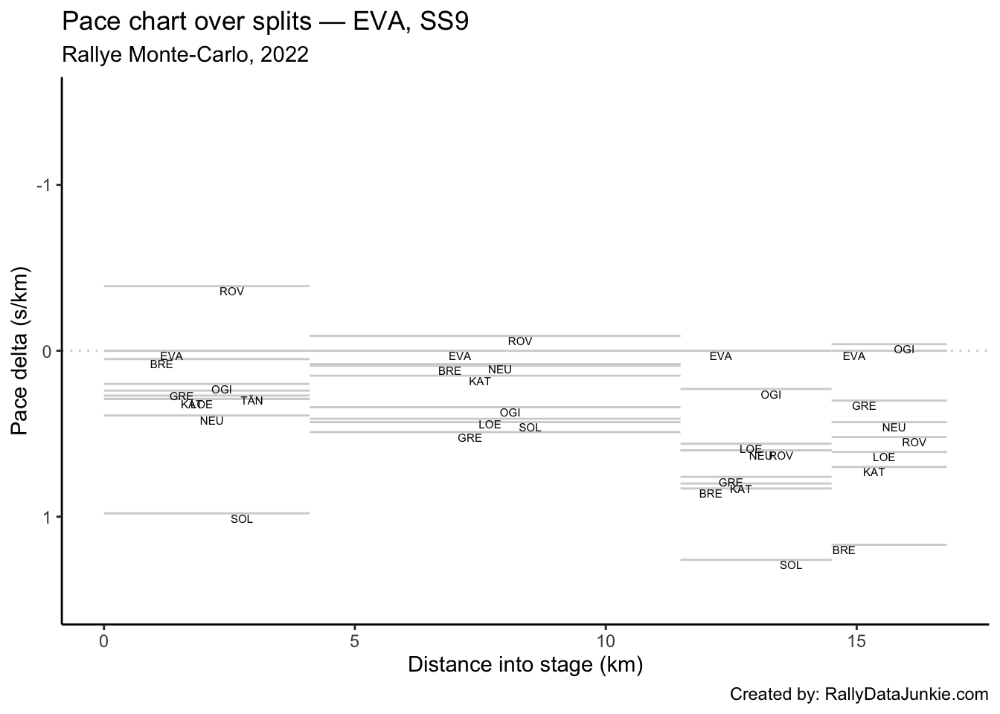
9.5 Driver Report, SS9 - NEU
NEU was in fourth place on stage, 1.1s behind OGI .
Stage report for NEU.
| Pos | Car | Code | Time (s) | Gap | Diff |
|---|---|---|---|---|---|
| 1 | 33 | EVA | -5.0 | -5.0 | 0.0 |
| 2 | 69 | ROV | -4.3 | -4.3 | 0.7 |
| 3 | 1 | OGI | -1.1 | -1.1 | 3.2 |
| 4 | 11 | NEU | 0.0 | 0.0 | 1.1 |
| 5 | 42 | BRE | 1.1 | 1.1 | 1.1 |
| 6 | 18 | KAT | 1.3 | 1.3 | 0.2 |
| 7 | 19 | LOE | 2.3 | 2.3 | 1.0 |
| 8 | 44 | GRE | 2.6 | 2.6 | 0.3 |
| 9 | 2 | SOL | 10.9 | 10.9 | 8.3 |
| 10 | 8 | TÄN | 71.8 | 71.8 | 60.9 |
9.5.1 Rebased Split Times
NEU’s delta at each split compared to other drivers.
| code | split_1 | split_2 | split_3 | split_N |
|---|---|---|---|---|
| EVA | -1.6 | -2.2 | -4.0 | -5.0 |
| ROV | -3.2 | -4.5 | -4.5 | -4.3 |
| OGI | -0.8 | 1.1 | 0.0 | -1.1 |
| NEU | 0.0 | 0.0 | 0.0 | 0.0 |
| BRE | -1.4 | -1.3 | -0.6 | 1.1 |
| KAT | -0.4 | 0.1 | 0.7 | 1.3 |
| LOE | -0.4 | 2.0 | 1.9 | 2.3 |
| GRE | -0.6 | 2.4 | 2.9 | 2.6 |
| SOL | 2.4 | 5.0 | 7.0 | 10.9 |
| TÄN | -0.5 | 28.3 | 53.4 | 71.8 |
9.5.2 Off-the-Pace Chart
Accumulated stage time deltas at each split:
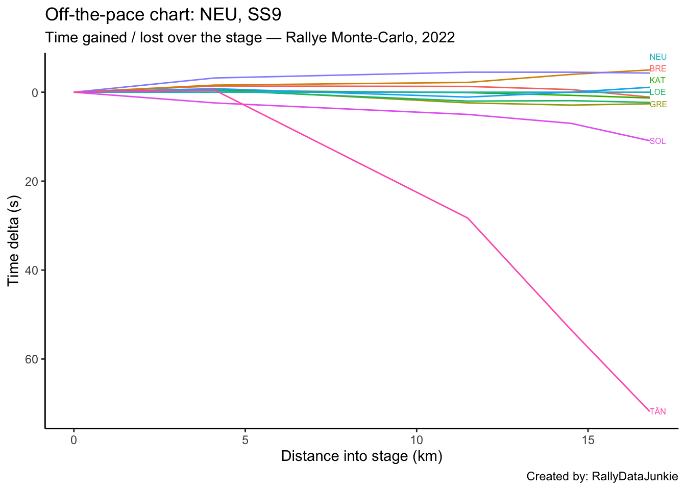
9.5.3 Within-Split Duration Deltas
NEU’s delta in time to complete each split section compared to other drivers:
| code | split_1 | split_2 | split_3 | split_N |
|---|---|---|---|---|
| EVA | -1.6 | -0.6 | -1.8 | -1.0 |
| ROV | -3.2 | -1.3 | 0.0 | 0.2 |
| OGI | -0.8 | 1.9 | -1.1 | -1.1 |
| NEU | 0.0 | 0.0 | 0.0 | 0.0 |
| BRE | -1.4 | 0.1 | 0.7 | 1.7 |
| KAT | -0.4 | 0.5 | 0.6 | 0.6 |
| LOE | -0.4 | 2.4 | -0.1 | 0.4 |
| GRE | -0.6 | 3.0 | 0.5 | -0.3 |
| SOL | 2.4 | 2.6 | 2.0 | 3.9 |
| TÄN | -0.5 | 28.8 | 25.1 | 18.4 |
9.5.4 Within-Split Pace Deltas
| code | split_1 | split_2 | split_3 | split_N |
|---|---|---|---|---|
| EVA | -0.39 | -0.08 | -0.60 | -0.43 |
| ROV | -0.78 | -0.18 | 0.00 | 0.09 |
| OGI | -0.20 | 0.26 | -0.37 | -0.48 |
| NEU | 0.00 | 0.00 | 0.00 | 0.00 |
| BRE | -0.34 | 0.01 | 0.23 | 0.74 |
| KAT | -0.10 | 0.07 | 0.20 | 0.26 |
| LOE | -0.10 | 0.32 | -0.03 | 0.17 |
| GRE | -0.15 | 0.41 | 0.17 | -0.13 |
| SOL | 0.59 | 0.35 | 0.66 | 1.70 |
| TÄN | -0.12 | 3.90 | 8.34 | 8.00 |
9.5.5 Within-Split Pace Map
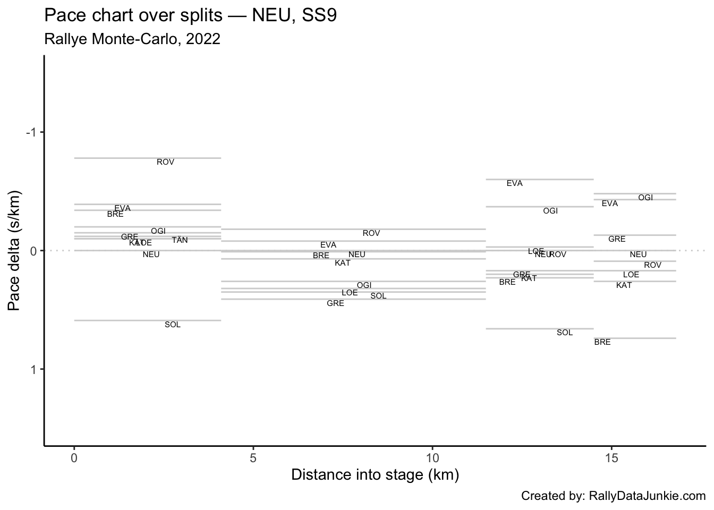
9.6 Driver Report, SS9 - ROV
ROV was in second place on stage, with a time of 553.5s , only 0.7s behind EVA.
Stage report for ROV.
| Pos | Car | Code | Time (s) | Gap | Diff |
|---|---|---|---|---|---|
| 1 | 33 | EVA | -0.7 | -0.7 | 0.0 |
| 2 | 69 | ROV | 0.0 | 0.0 | 0.7 |
| 3 | 1 | OGI | 3.2 | 3.2 | 3.2 |
| 4 | 11 | NEU | 4.3 | 4.3 | 1.1 |
| 5 | 42 | BRE | 5.4 | 5.4 | 1.1 |
| 6 | 18 | KAT | 5.6 | 5.6 | 0.2 |
| 7 | 19 | LOE | 6.6 | 6.6 | 1.0 |
| 8 | 44 | GRE | 6.9 | 6.9 | 0.3 |
| 9 | 2 | SOL | 15.2 | 15.2 | 8.3 |
| 10 | 8 | TÄN | 76.1 | 76.1 | 60.9 |
9.6.1 Rebased Split Times
ROV’s delta at each split compared to other drivers.
| code | split_1 | split_2 | split_3 | split_N |
|---|---|---|---|---|
| EVA | 1.6 | 2.3 | 0.5 | -0.7 |
| ROV | 0.0 | 0.0 | 0.0 | 0.0 |
| OGI | 2.4 | 5.6 | 4.5 | 3.2 |
| NEU | 3.2 | 4.5 | 4.5 | 4.3 |
| BRE | 1.8 | 3.2 | 3.9 | 5.4 |
| KAT | 2.8 | 4.6 | 5.2 | 5.6 |
| LOE | 2.8 | 6.5 | 6.4 | 6.6 |
| GRE | 2.6 | 6.9 | 7.4 | 6.9 |
| SOL | 5.6 | 9.5 | 11.5 | 15.2 |
| TÄN | 2.7 | 32.8 | 57.9 | 76.1 |
9.6.2 Off-the-Pace Chart
Accumulated stage time deltas at each split:
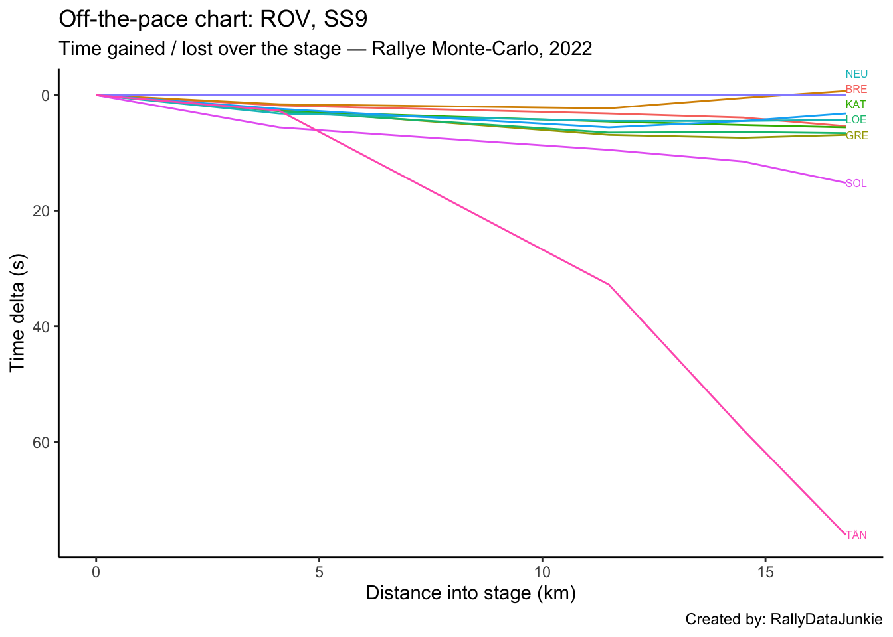
9.6.3 Within-Split Duration Deltas
ROV’s delta in time to complete each split section compared to other drivers:
| code | split_1 | split_2 | split_3 | split_N |
|---|---|---|---|---|
| EVA | 1.6 | 0.7 | -1.8 | -1.2 |
| ROV | 0.0 | 0.0 | 0.0 | 0.0 |
| OGI | 2.4 | 3.2 | -1.1 | -1.3 |
| NEU | 3.2 | 1.3 | 0.0 | -0.2 |
| BRE | 1.8 | 1.4 | 0.7 | 1.5 |
| KAT | 2.8 | 1.8 | 0.6 | 0.4 |
| LOE | 2.8 | 3.7 | -0.1 | 0.2 |
| GRE | 2.6 | 4.3 | 0.5 | -0.5 |
| SOL | 5.6 | 3.9 | 2.0 | 3.7 |
| TÄN | 2.7 | 30.1 | 25.1 | 18.2 |
9.6.4 Within-Split Pace Deltas
| code | split_1 | split_2 | split_3 | split_N |
|---|---|---|---|---|
| EVA | 0.39 | 0.09 | -0.60 | -0.52 |
| ROV | 0.00 | 0.00 | 0.00 | 0.00 |
| OGI | 0.59 | 0.43 | -0.37 | -0.57 |
| NEU | 0.78 | 0.18 | 0.00 | -0.09 |
| BRE | 0.44 | 0.19 | 0.23 | 0.65 |
| KAT | 0.68 | 0.24 | 0.20 | 0.17 |
| LOE | 0.68 | 0.50 | -0.03 | 0.09 |
| GRE | 0.63 | 0.58 | 0.17 | -0.22 |
| SOL | 1.37 | 0.53 | 0.66 | 1.61 |
| TÄN | 0.66 | 4.07 | 8.34 | 7.91 |
9.6.5 Within-Split Pace Map
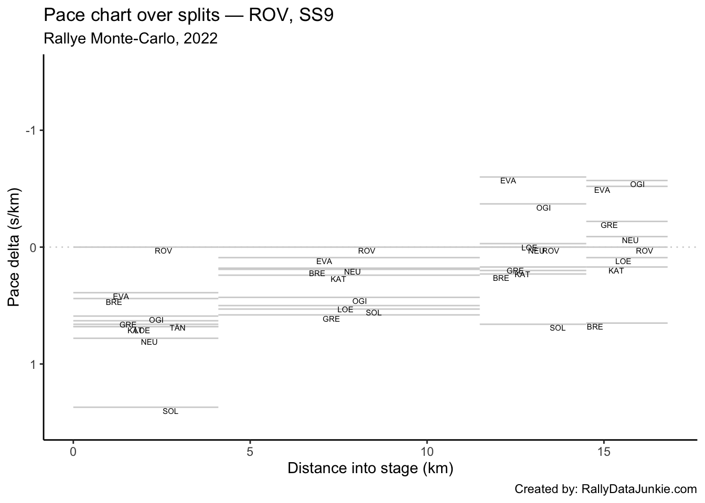
9.7 Driver Report, SS9 - TÄN
TÄN was in tenth place on stage dropped three places to eighth overall, with a time of 629.6s, well back on SOL, who was 60.9s quicker.
Stage report for TÄN.
| Pos | Car | Code | Time (s) | Gap | Diff |
|---|---|---|---|---|---|
| 1 | 33 | EVA | -76.8 | -76.8 | 0.0 |
| 2 | 69 | ROV | -76.1 | -76.1 | 0.7 |
| 3 | 1 | OGI | -72.9 | -72.9 | 3.2 |
| 4 | 11 | NEU | -71.8 | -71.8 | 1.1 |
| 5 | 42 | BRE | -70.7 | -70.7 | 1.1 |
| 6 | 18 | KAT | -70.5 | -70.5 | 0.2 |
| 7 | 19 | LOE | -69.5 | -69.5 | 1.0 |
| 8 | 44 | GRE | -69.2 | -69.2 | 0.3 |
| 9 | 2 | SOL | -60.9 | -60.9 | 8.3 |
| 10 | 8 | TÄN | 0.0 | 0.0 | 60.9 |
9.7.1 Rebased Split Times
TÄN’s delta at each split compared to other drivers.
| code | split_1 | split_2 | split_3 | split_N |
|---|---|---|---|---|
| EVA | -1.1 | -30.5 | -57.4 | -76.8 |
| ROV | -2.7 | -32.8 | -57.9 | -76.1 |
| OGI | -0.3 | -27.2 | -53.4 | -72.9 |
| NEU | 0.5 | -28.3 | -53.4 | -71.8 |
| BRE | -0.9 | -29.6 | -54.0 | -70.7 |
| KAT | 0.1 | -28.2 | -52.7 | -70.5 |
| LOE | 0.1 | -26.3 | -51.5 | -69.5 |
| GRE | -0.1 | -25.9 | -50.5 | -69.2 |
| SOL | 2.9 | -23.3 | -46.4 | -60.9 |
| TÄN | 0.0 | 0.0 | 0.0 | 0.0 |
9.7.2 Off-the-Pace Chart
Accumulated stage time deltas at each split:
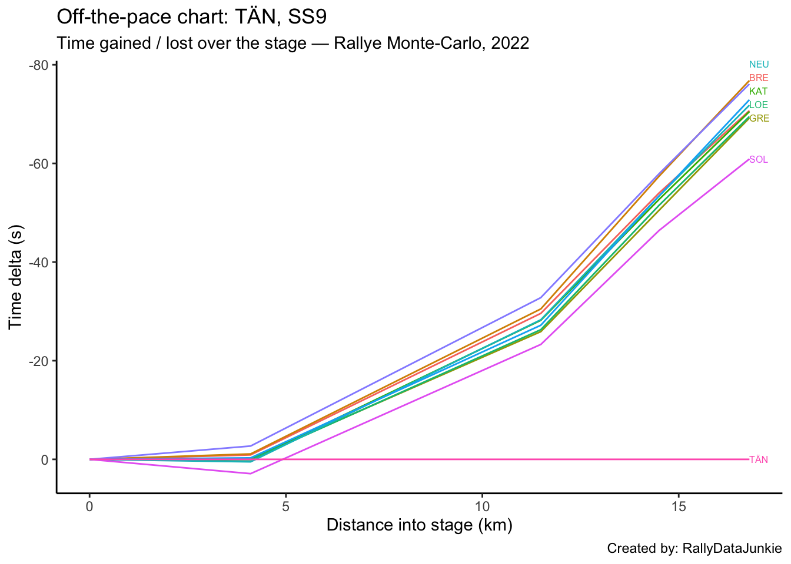
9.7.3 Within-Split Duration Deltas
TÄN’s delta in time to complete each split section compared to other drivers:
| code | split_1 | split_2 | split_3 | split_N |
|---|---|---|---|---|
| EVA | -1.1 | -29.4 | -26.9 | -19.4 |
| ROV | -2.7 | -30.1 | -25.1 | -18.2 |
| OGI | -0.3 | -26.9 | -26.2 | -19.5 |
| NEU | 0.5 | -28.8 | -25.1 | -18.4 |
| BRE | -0.9 | -28.7 | -24.4 | -16.7 |
| KAT | 0.1 | -28.3 | -24.5 | -17.8 |
| LOE | 0.1 | -26.4 | -25.2 | -18.0 |
| GRE | -0.1 | -25.8 | -24.6 | -18.7 |
| SOL | 2.9 | -26.2 | -23.1 | -14.5 |
| TÄN | 0.0 | 0.0 | 0.0 | 0.0 |
9.7.4 Within-Split Pace Deltas
| code | split_1 | split_2 | split_3 | split_N |
|---|---|---|---|---|
| EVA | -0.27 | -3.98 | -8.94 | -8.43 |
| ROV | -0.66 | -4.07 | -8.34 | -7.91 |
| OGI | -0.07 | -3.64 | -8.70 | -8.48 |
| NEU | 0.12 | -3.90 | -8.34 | -8.00 |
| BRE | -0.22 | -3.88 | -8.11 | -7.26 |
| KAT | 0.02 | -3.83 | -8.14 | -7.74 |
| LOE | 0.02 | -3.57 | -8.37 | -7.83 |
| GRE | -0.02 | -3.49 | -8.17 | -8.13 |
| SOL | 0.71 | -3.55 | -7.67 | -6.30 |
| TÄN | 0.00 | 0.00 | 0.00 | 0.00 |
9.7.5 Within-Split Pace Map
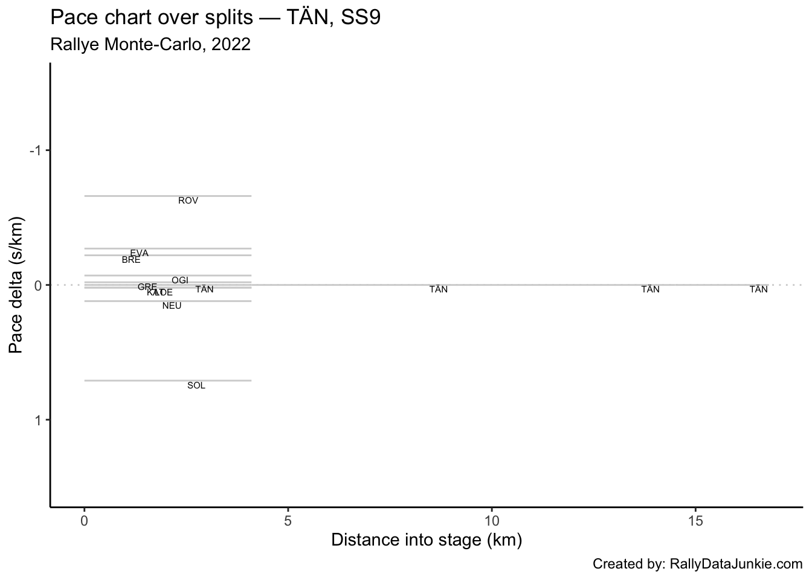
9.8 Driver Report, SS9 - KAT
KAT was in sixth on stage, with a time of 559.1s and moved up one place to seventh overall and just 0.2s further back behind BRE.
Stage report for KAT.
| Pos | Car | Code | Time (s) | Gap | Diff |
|---|---|---|---|---|---|
| 1 | 33 | EVA | -6.3 | -6.3 | 0.0 |
| 2 | 69 | ROV | -5.6 | -5.6 | 0.7 |
| 3 | 1 | OGI | -2.4 | -2.4 | 3.2 |
| 4 | 11 | NEU | -1.3 | -1.3 | 1.1 |
| 5 | 42 | BRE | -0.2 | -0.2 | 1.1 |
| 6 | 18 | KAT | 0.0 | 0.0 | 0.2 |
| 7 | 19 | LOE | 1.0 | 1.0 | 1.0 |
| 8 | 44 | GRE | 1.3 | 1.3 | 0.3 |
| 9 | 2 | SOL | 9.6 | 9.6 | 8.3 |
| 10 | 8 | TÄN | 70.5 | 70.5 | 60.9 |
9.8.1 Rebased Split Times
KAT’s delta at each split compared to other drivers.
| code | split_1 | split_2 | split_3 | split_N |
|---|---|---|---|---|
| EVA | -1.2 | -2.3 | -4.7 | -6.3 |
| ROV | -2.8 | -4.6 | -5.2 | -5.6 |
| OGI | -0.4 | 1.0 | -0.7 | -2.4 |
| NEU | 0.4 | -0.1 | -0.7 | -1.3 |
| BRE | -1.0 | -1.4 | -1.3 | -0.2 |
| KAT | 0.0 | 0.0 | 0.0 | 0.0 |
| LOE | 0.0 | 1.9 | 1.2 | 1.0 |
| GRE | -0.2 | 2.3 | 2.2 | 1.3 |
| SOL | 2.8 | 4.9 | 6.3 | 9.6 |
| TÄN | -0.1 | 28.2 | 52.7 | 70.5 |
9.8.2 Off-the-Pace Chart
Accumulated stage time deltas at each split:
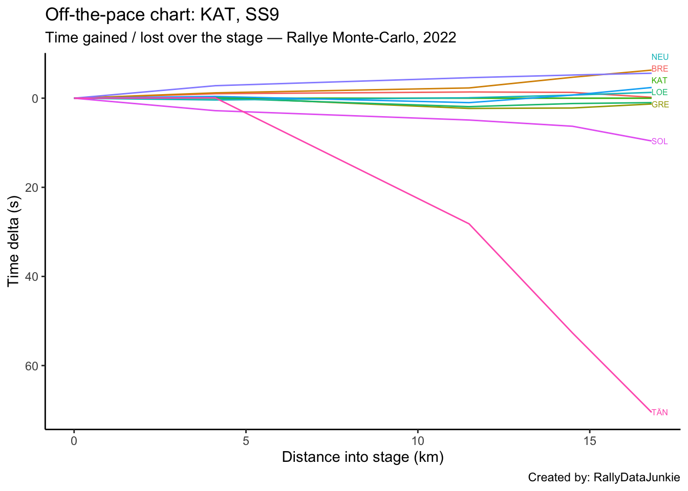
9.8.3 Within-Split Duration Deltas
KAT’s delta in time to complete each split section compared to other drivers:
| code | split_1 | split_2 | split_3 | split_N |
|---|---|---|---|---|
| EVA | -1.2 | -1.1 | -2.4 | -1.6 |
| ROV | -2.8 | -1.8 | -0.6 | -0.4 |
| OGI | -0.4 | 1.4 | -1.7 | -1.7 |
| NEU | 0.4 | -0.5 | -0.6 | -0.6 |
| BRE | -1.0 | -0.4 | 0.1 | 1.1 |
| KAT | 0.0 | 0.0 | 0.0 | 0.0 |
| LOE | 0.0 | 1.9 | -0.7 | -0.2 |
| GRE | -0.2 | 2.5 | -0.1 | -0.9 |
| SOL | 2.8 | 2.1 | 1.4 | 3.3 |
| TÄN | -0.1 | 28.3 | 24.5 | 17.8 |
9.8.4 Within-Split Pace Deltas
| code | split_1 | split_2 | split_3 | split_N |
|---|---|---|---|---|
| EVA | -0.29 | -0.15 | -0.80 | -0.70 |
| ROV | -0.68 | -0.24 | -0.20 | -0.17 |
| OGI | -0.10 | 0.19 | -0.56 | -0.74 |
| NEU | 0.10 | -0.07 | -0.20 | -0.26 |
| BRE | -0.24 | -0.05 | 0.03 | 0.48 |
| KAT | 0.00 | 0.00 | 0.00 | 0.00 |
| LOE | 0.00 | 0.26 | -0.23 | -0.09 |
| GRE | -0.05 | 0.34 | -0.03 | -0.39 |
| SOL | 0.68 | 0.28 | 0.47 | 1.43 |
| TÄN | -0.02 | 3.83 | 8.14 | 7.74 |
9.8.5 Within-Split Pace Map
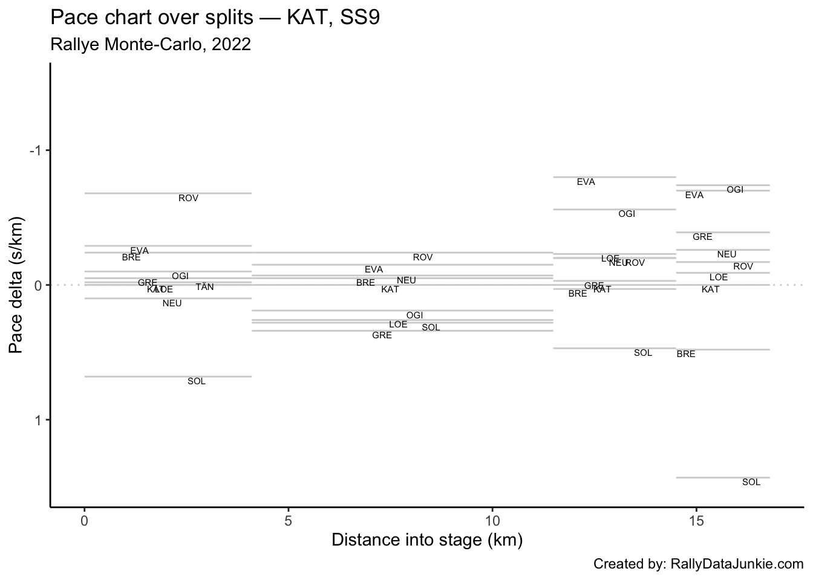
9.9 Driver Report, SS9 - BRE
BRE took fifth position on stage, 1.1s behind NEU and moved up one place to fifth overall.
Stage report for BRE.
| Pos | Car | Code | Time (s) | Gap | Diff |
|---|---|---|---|---|---|
| 1 | 33 | EVA | -6.1 | -6.1 | 0.0 |
| 2 | 69 | ROV | -5.4 | -5.4 | 0.7 |
| 3 | 1 | OGI | -2.2 | -2.2 | 3.2 |
| 4 | 11 | NEU | -1.1 | -1.1 | 1.1 |
| 5 | 42 | BRE | 0.0 | 0.0 | 1.1 |
| 6 | 18 | KAT | 0.2 | 0.2 | 0.2 |
| 7 | 19 | LOE | 1.2 | 1.2 | 1.0 |
| 8 | 44 | GRE | 1.5 | 1.5 | 0.3 |
| 9 | 2 | SOL | 9.8 | 9.8 | 8.3 |
| 10 | 8 | TÄN | 70.7 | 70.7 | 60.9 |
9.9.1 Rebased Split Times
BRE’s delta at each split compared to other drivers.
| code | split_1 | split_2 | split_3 | split_N |
|---|---|---|---|---|
| EVA | -0.2 | -0.9 | -3.4 | -6.1 |
| ROV | -1.8 | -3.2 | -3.9 | -5.4 |
| OGI | 0.6 | 2.4 | 0.6 | -2.2 |
| NEU | 1.4 | 1.3 | 0.6 | -1.1 |
| BRE | 0.0 | 0.0 | 0.0 | 0.0 |
| KAT | 1.0 | 1.4 | 1.3 | 0.2 |
| LOE | 1.0 | 3.3 | 2.5 | 1.2 |
| GRE | 0.8 | 3.7 | 3.5 | 1.5 |
| SOL | 3.8 | 6.3 | 7.6 | 9.8 |
| TÄN | 0.9 | 29.6 | 54.0 | 70.7 |
9.9.2 Off-the-Pace Chart
Accumulated stage time deltas at each split:
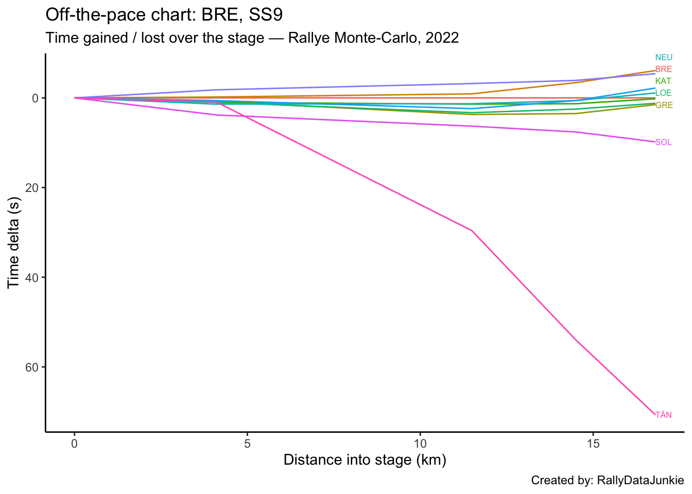
9.9.3 Within-Split Duration Deltas
BRE’s delta in time to complete each split section compared to other drivers:
| code | split_1 | split_2 | split_3 | split_N |
|---|---|---|---|---|
| EVA | -0.2 | -0.7 | -2.5 | -2.7 |
| ROV | -1.8 | -1.4 | -0.7 | -1.5 |
| OGI | 0.6 | 1.8 | -1.8 | -2.8 |
| NEU | 1.4 | -0.1 | -0.7 | -1.7 |
| BRE | 0.0 | 0.0 | 0.0 | 0.0 |
| KAT | 1.0 | 0.4 | -0.1 | -1.1 |
| LOE | 1.0 | 2.3 | -0.8 | -1.3 |
| GRE | 0.8 | 2.9 | -0.2 | -2.0 |
| SOL | 3.8 | 2.5 | 1.3 | 2.2 |
| TÄN | 0.9 | 28.7 | 24.4 | 16.7 |
9.9.4 Within-Split Pace Deltas
| code | split_1 | split_2 | split_3 | split_N |
|---|---|---|---|---|
| EVA | -0.05 | -0.09 | -0.83 | -1.17 |
| ROV | -0.44 | -0.19 | -0.23 | -0.65 |
| OGI | 0.15 | 0.24 | -0.60 | -1.22 |
| NEU | 0.34 | -0.01 | -0.23 | -0.74 |
| BRE | 0.00 | 0.00 | 0.00 | 0.00 |
| KAT | 0.24 | 0.05 | -0.03 | -0.48 |
| LOE | 0.24 | 0.31 | -0.27 | -0.57 |
| GRE | 0.20 | 0.39 | -0.07 | -0.87 |
| SOL | 0.93 | 0.34 | 0.43 | 0.96 |
| TÄN | 0.22 | 3.88 | 8.11 | 7.26 |
9.9.5 Within-Split Pace Map
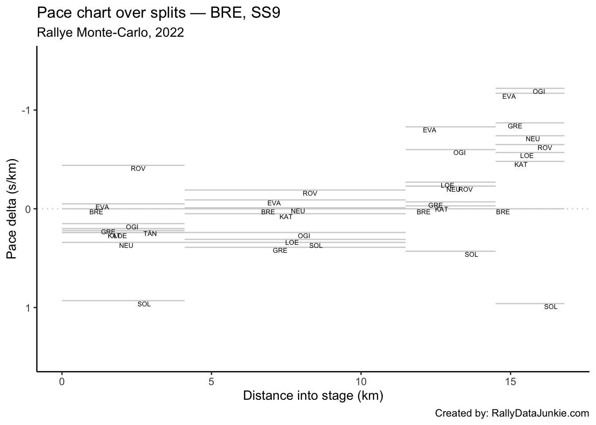
9.10 Driver Report, SS9 - GRE
GRE was in eighth place on stage, 7.6s behind stage winner EVA and moved up one place to sixth overall, just 0.3s off LOE.
Stage report for GRE.
| Pos | Car | Code | Time (s) | Gap | Diff |
|---|---|---|---|---|---|
| 1 | 33 | EVA | -7.6 | -7.6 | 0.0 |
| 2 | 69 | ROV | -6.9 | -6.9 | 0.7 |
| 3 | 1 | OGI | -3.7 | -3.7 | 3.2 |
| 4 | 11 | NEU | -2.6 | -2.6 | 1.1 |
| 5 | 42 | BRE | -1.5 | -1.5 | 1.1 |
| 6 | 18 | KAT | -1.3 | -1.3 | 0.2 |
| 7 | 19 | LOE | -0.3 | -0.3 | 1.0 |
| 8 | 44 | GRE | 0.0 | 0.0 | 0.3 |
| 9 | 2 | SOL | 8.3 | 8.3 | 8.3 |
| 10 | 8 | TÄN | 69.2 | 69.2 | 60.9 |
9.10.1 Rebased Split Times
GRE’s delta at each split compared to other drivers.
| code | split_1 | split_2 | split_3 | split_N |
|---|---|---|---|---|
| EVA | -1.0 | -4.6 | -6.9 | -7.6 |
| ROV | -2.6 | -6.9 | -7.4 | -6.9 |
| OGI | -0.2 | -1.3 | -2.9 | -3.7 |
| NEU | 0.6 | -2.4 | -2.9 | -2.6 |
| BRE | -0.8 | -3.7 | -3.5 | -1.5 |
| KAT | 0.2 | -2.3 | -2.2 | -1.3 |
| LOE | 0.2 | -0.4 | -1.0 | -0.3 |
| GRE | 0.0 | 0.0 | 0.0 | 0.0 |
| SOL | 3.0 | 2.6 | 4.1 | 8.3 |
| TÄN | 0.1 | 25.9 | 50.5 | 69.2 |
9.10.2 Off-the-Pace Chart
Accumulated stage time deltas at each split:
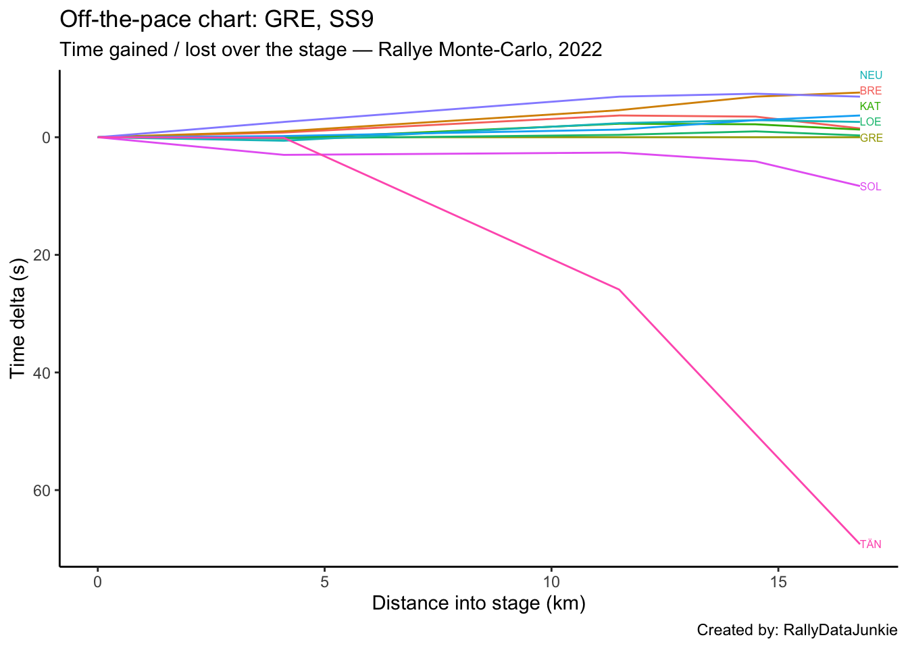
9.10.3 Within-Split Duration Deltas
GRE’s delta in time to complete each split section compared to other drivers:
| code | split_1 | split_2 | split_3 | split_N |
|---|---|---|---|---|
| EVA | -1.0 | -3.6 | -2.3 | -0.7 |
| ROV | -2.6 | -4.3 | -0.5 | 0.5 |
| OGI | -0.2 | -1.1 | -1.6 | -0.8 |
| NEU | 0.6 | -3.0 | -0.5 | 0.3 |
| BRE | -0.8 | -2.9 | 0.2 | 2.0 |
| KAT | 0.2 | -2.5 | 0.1 | 0.9 |
| LOE | 0.2 | -0.6 | -0.6 | 0.7 |
| GRE | 0.0 | 0.0 | 0.0 | 0.0 |
| SOL | 3.0 | -0.4 | 1.5 | 4.2 |
| TÄN | 0.1 | 25.8 | 24.6 | 18.7 |
9.10.4 Within-Split Pace Deltas
| code | split_1 | split_2 | split_3 | split_N |
|---|---|---|---|---|
| EVA | -0.24 | -0.49 | -0.76 | -0.30 |
| ROV | -0.63 | -0.58 | -0.17 | 0.22 |
| OGI | -0.05 | -0.15 | -0.53 | -0.35 |
| NEU | 0.15 | -0.41 | -0.17 | 0.13 |
| BRE | -0.20 | -0.39 | 0.07 | 0.87 |
| KAT | 0.05 | -0.34 | 0.03 | 0.39 |
| LOE | 0.05 | -0.08 | -0.20 | 0.30 |
| GRE | 0.00 | 0.00 | 0.00 | 0.00 |
| SOL | 0.73 | -0.05 | 0.50 | 1.83 |
| TÄN | 0.02 | 3.49 | 8.17 | 8.13 |
9.10.5 Within-Split Pace Map
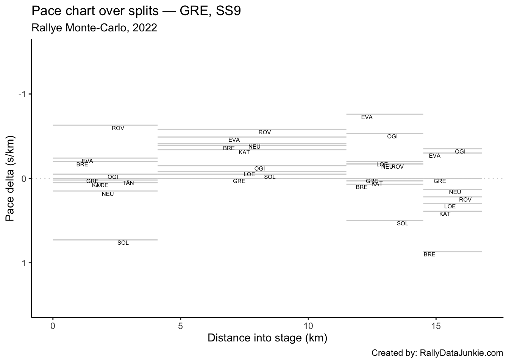
9.11 Driver Report, SS9 - FOU
No stage report for FOU.
9.12 Driver Report, SS9 - SOL
SOL was in ninth on stage, with a time of 568.7s .
Stage report for SOL.
| Pos | Car | Code | Time (s) | Gap | Diff |
|---|---|---|---|---|---|
| 1 | 33 | EVA | -15.9 | -15.9 | 0.0 |
| 2 | 69 | ROV | -15.2 | -15.2 | 0.7 |
| 3 | 1 | OGI | -12.0 | -12.0 | 3.2 |
| 4 | 11 | NEU | -10.9 | -10.9 | 1.1 |
| 5 | 42 | BRE | -9.8 | -9.8 | 1.1 |
| 6 | 18 | KAT | -9.6 | -9.6 | 0.2 |
| 7 | 19 | LOE | -8.6 | -8.6 | 1.0 |
| 8 | 44 | GRE | -8.3 | -8.3 | 0.3 |
| 9 | 2 | SOL | 0.0 | 0.0 | 8.3 |
| 10 | 8 | TÄN | 60.9 | 60.9 | 60.9 |
9.12.1 Rebased Split Times
SOL’s delta at each split compared to other drivers.
| code | split_1 | split_2 | split_3 | split_N |
|---|---|---|---|---|
| EVA | -4.0 | -7.2 | -11.0 | -15.9 |
| ROV | -5.6 | -9.5 | -11.5 | -15.2 |
| OGI | -3.2 | -3.9 | -7.0 | -12.0 |
| NEU | -2.4 | -5.0 | -7.0 | -10.9 |
| BRE | -3.8 | -6.3 | -7.6 | -9.8 |
| KAT | -2.8 | -4.9 | -6.3 | -9.6 |
| LOE | -2.8 | -3.0 | -5.1 | -8.6 |
| GRE | -3.0 | -2.6 | -4.1 | -8.3 |
| SOL | 0.0 | 0.0 | 0.0 | 0.0 |
| TÄN | -2.9 | 23.3 | 46.4 | 60.9 |
9.12.2 Off-the-Pace Chart
Accumulated stage time deltas at each split:
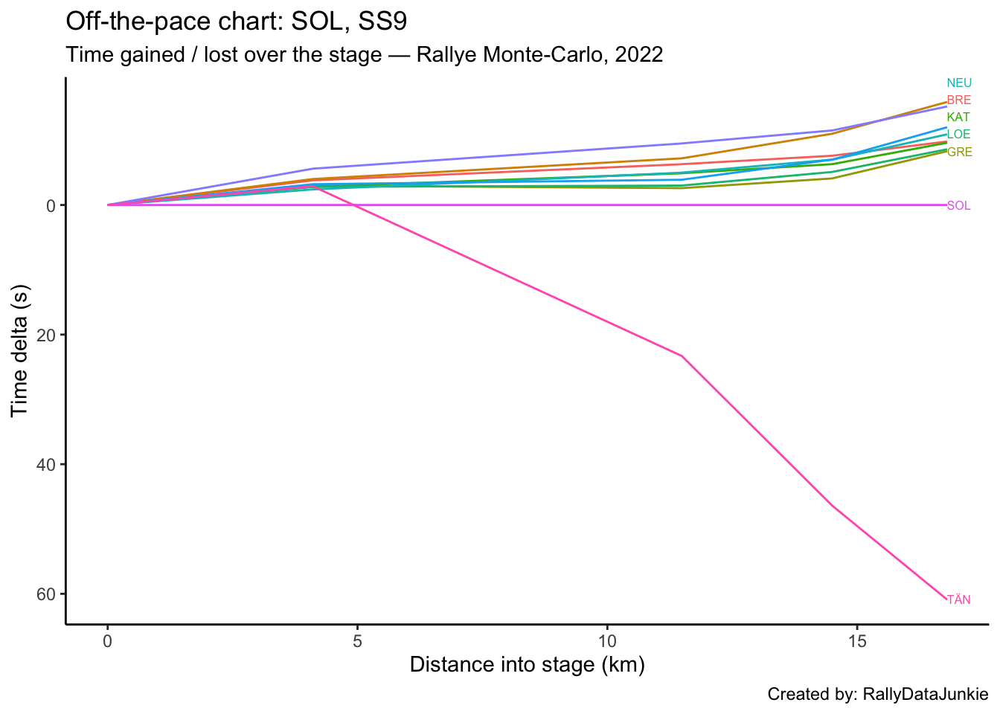
9.12.3 Within-Split Duration Deltas
SOL’s delta in time to complete each split section compared to other drivers:
| code | split_1 | split_2 | split_3 | split_N |
|---|---|---|---|---|
| EVA | -4.0 | -3.2 | -3.8 | -4.9 |
| ROV | -5.6 | -3.9 | -2.0 | -3.7 |
| OGI | -3.2 | -0.7 | -3.1 | -5.0 |
| NEU | -2.4 | -2.6 | -2.0 | -3.9 |
| BRE | -3.8 | -2.5 | -1.3 | -2.2 |
| KAT | -2.8 | -2.1 | -1.4 | -3.3 |
| LOE | -2.8 | -0.2 | -2.1 | -3.5 |
| GRE | -3.0 | 0.4 | -1.5 | -4.2 |
| SOL | 0.0 | 0.0 | 0.0 | 0.0 |
| TÄN | -2.9 | 26.2 | 23.1 | 14.5 |
9.12.4 Within-Split Pace Deltas
| code | split_1 | split_2 | split_3 | split_N |
|---|---|---|---|---|
| EVA | -0.98 | -0.43 | -1.26 | -2.13 |
| ROV | -1.37 | -0.53 | -0.66 | -1.61 |
| OGI | -0.78 | -0.09 | -1.03 | -2.17 |
| NEU | -0.59 | -0.35 | -0.66 | -1.70 |
| BRE | -0.93 | -0.34 | -0.43 | -0.96 |
| KAT | -0.68 | -0.28 | -0.47 | -1.43 |
| LOE | -0.68 | -0.03 | -0.70 | -1.52 |
| GRE | -0.73 | 0.05 | -0.50 | -1.83 |
| SOL | 0.00 | 0.00 | 0.00 | 0.00 |
| TÄN | -0.71 | 3.55 | 7.67 | 6.30 |
9.12.5 Within-Split Pace Map
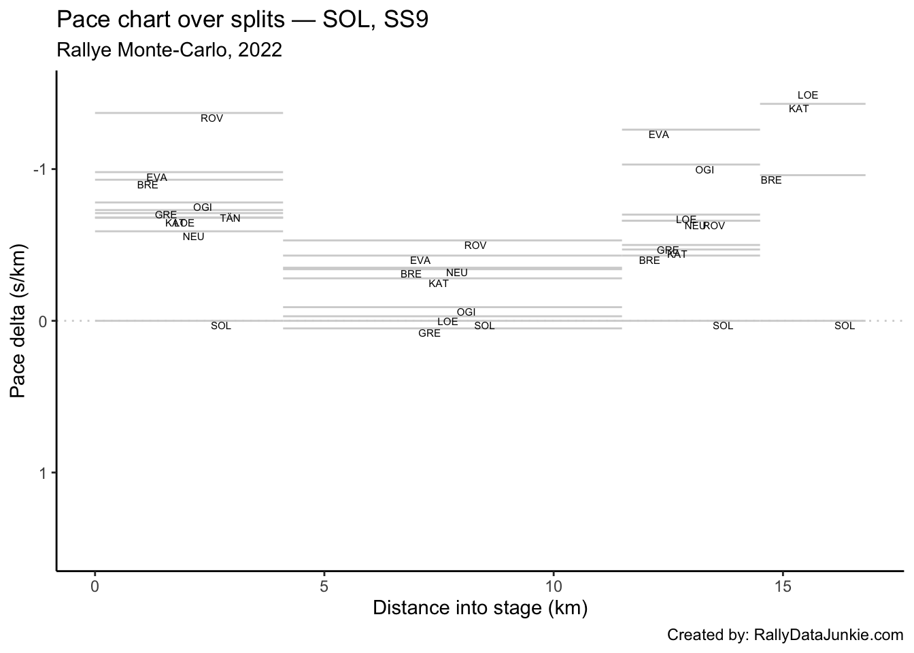
9.13 Driver Report, SS9 - LOE
LOE was in seventh on stage, 7.3s behind the stage winner in a time of 560.1s and retained the overall lead.
Stage report for LOE.
| Pos | Car | Code | Time (s) | Gap | Diff |
|---|---|---|---|---|---|
| 1 | 33 | EVA | -7.3 | -7.3 | 0.0 |
| 2 | 69 | ROV | -6.6 | -6.6 | 0.7 |
| 3 | 1 | OGI | -3.4 | -3.4 | 3.2 |
| 4 | 11 | NEU | -2.3 | -2.3 | 1.1 |
| 5 | 42 | BRE | -1.2 | -1.2 | 1.1 |
| 6 | 18 | KAT | -1.0 | -1.0 | 0.2 |
| 7 | 19 | LOE | 0.0 | 0.0 | 1.0 |
| 8 | 44 | GRE | 0.3 | 0.3 | 0.3 |
| 9 | 2 | SOL | 8.6 | 8.6 | 8.3 |
| 10 | 8 | TÄN | 69.5 | 69.5 | 60.9 |
9.13.1 Rebased Split Times
LOE’s delta at each split compared to other drivers.
| code | split_1 | split_2 | split_3 | split_N |
|---|---|---|---|---|
| EVA | -1.2 | -4.2 | -5.9 | -7.3 |
| ROV | -2.8 | -6.5 | -6.4 | -6.6 |
| OGI | -0.4 | -0.9 | -1.9 | -3.4 |
| NEU | 0.4 | -2.0 | -1.9 | -2.3 |
| BRE | -1.0 | -3.3 | -2.5 | -1.2 |
| KAT | 0.0 | -1.9 | -1.2 | -1.0 |
| LOE | 0.0 | 0.0 | 0.0 | 0.0 |
| GRE | -0.2 | 0.4 | 1.0 | 0.3 |
| SOL | 2.8 | 3.0 | 5.1 | 8.6 |
| TÄN | -0.1 | 26.3 | 51.5 | 69.5 |
9.13.2 Off-the-Pace Chart
Accumulated stage time deltas at each split:
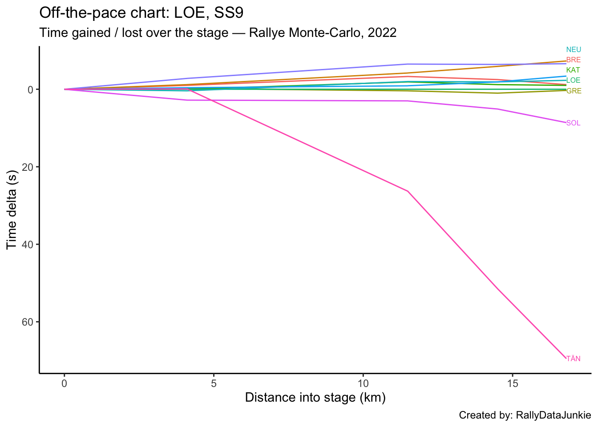
9.13.3 Within-Split Duration Deltas
LOE’s delta in time to complete each split section compared to other drivers:
| code | split_1 | split_2 | split_3 | split_N |
|---|---|---|---|---|
| EVA | -1.2 | -3.0 | -1.7 | -1.4 |
| ROV | -2.8 | -3.7 | 0.1 | -0.2 |
| OGI | -0.4 | -0.5 | -1.0 | -1.5 |
| NEU | 0.4 | -2.4 | 0.1 | -0.4 |
| BRE | -1.0 | -2.3 | 0.8 | 1.3 |
| KAT | 0.0 | -1.9 | 0.7 | 0.2 |
| LOE | 0.0 | 0.0 | 0.0 | 0.0 |
| GRE | -0.2 | 0.6 | 0.6 | -0.7 |
| SOL | 2.8 | 0.2 | 2.1 | 3.5 |
| TÄN | -0.1 | 26.4 | 25.2 | 18.0 |
9.13.4 Within-Split Pace Deltas
| code | split_1 | split_2 | split_3 | split_N |
|---|---|---|---|---|
| EVA | -0.29 | -0.41 | -0.56 | -0.61 |
| ROV | -0.68 | -0.50 | 0.03 | -0.09 |
| OGI | -0.10 | -0.07 | -0.33 | -0.65 |
| NEU | 0.10 | -0.32 | 0.03 | -0.17 |
| BRE | -0.24 | -0.31 | 0.27 | 0.57 |
| KAT | 0.00 | -0.26 | 0.23 | 0.09 |
| LOE | 0.00 | 0.00 | 0.00 | 0.00 |
| GRE | -0.05 | 0.08 | 0.20 | -0.30 |
| SOL | 0.68 | 0.03 | 0.70 | 1.52 |
| TÄN | -0.02 | 3.57 | 8.37 | 7.83 |
9.13.5 Within-Split Pace Map
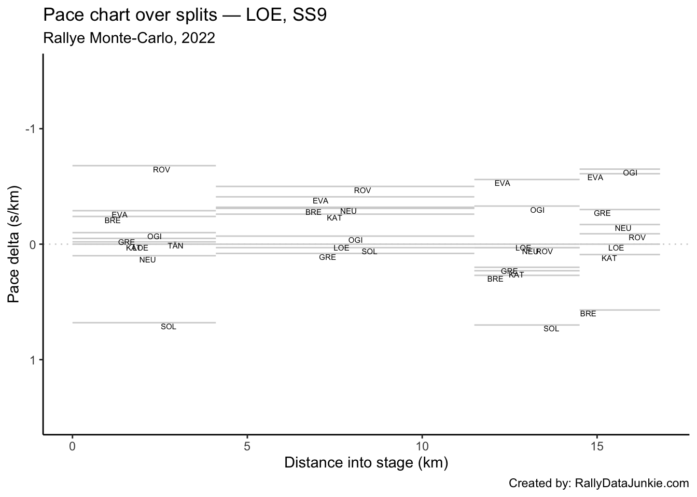